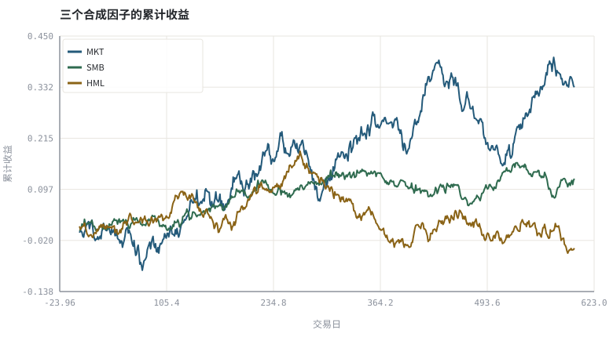
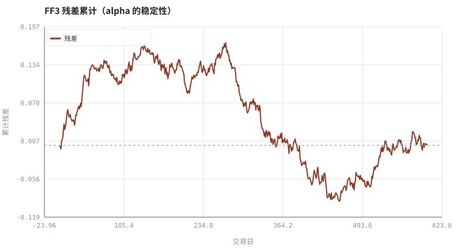

第 21 章因子、CAPM 与 Fama-French
把「为什么这只股票涨得多」拆成可估计的暴露与不可解释的残差。
本章位置：第四阶段从「可验证的收益分解」开始；第 22 章 · 有效市场、行为偏差与处置效应 讨论模型之外的人，第 23 章 · 资金流、情绪与拥挤交易 讨论资金拥挤，第 24 章 · 怎样读一篇因子论文：从摘要到可复现 讨论怎样读一篇因子论文。
因子回归是一次多元线性回归：X 是因子暴露矩阵，α 是截距，t 值 是信噪比。漏掉一列特征，截距就会替它背锅。
- 能写出 CAPM 与 Fama-French 三因子回归式。
- 能用手写 OLS 估计 beta、alpha 与 t 值。
- 能解释遗漏变量如何把因子收益错记成 alpha。
- 能说明因子溢价、数据挖掘与交易成本三者之间的关系。
§知识点地图
每个知识点都配了 1～2 个扩展学习链接；本章完整资源清单见 扩展学习。
| # | 知识点 | 扩展学习 | 状态 |
|---|---|---|---|
| 1 | CAPM 与 beta | Capital asset pricing model · Beta (finance) | 正文已覆盖 |
| 2 | 市场因子 | Fama–French three-factor model · Factor investing | 正文已覆盖 |
| 3 | 规模与价值因子 SMB/HML | Fama–French three-factor model · Factor investing | 正文已覆盖 |
| 4 | 三因子回归 | Fama–French three-factor model · Factor investing | 正文已覆盖 |
| 5 | alpha 与 t 值 | Jensen's alpha · Capital asset pricing model | 正文已覆盖 |
| 6 | R² 与残差 | Fama–French three-factor model · Factor investing | 正文已覆盖 |
| 7 | 遗漏变量偏差 | Fama–French three-factor model · Factor investing | 正文已覆盖 |
| 8 | 因子与 Smart Beta | Beta (finance) · Capital asset pricing model | 正文已覆盖 |
§21.1收益的线性分解
r_i − r_f = α_i + β_m MKT + β_s SMB + β_h HML + ε_i
α 是模型无法解释的平均残差，β 是对共同因子的暴露。第 13 章末尾留下的问题「分散不掉的那部分风险」在这里有了名字：市场因子。SMB（小市值减大市值）与 HML（高账面市值比减低）是后续加入的横截面维度。
| 模型 | 解释变量 | α 的含义 | 主要风险 |
|---|---|---|---|
| CAPM | MKT | 相对市场的超额收益 | 遗漏其他系统性因子 |
| FF3 | MKT + SMB + HML | 相对三因子的残差均值 | 样本期与构造口径依赖 |
| FF5 / 动量 | 再加 RMW/CMA/UMD | 更严格的残差 | 因子越来越多，过拟合风险上升 |
§21.2alpha 是最容易被偷换的概念
若真实收益由三因子生成，却只用 CAPM 回归，β_s、β_h 的贡献会被挤进 α，于是「选股能力」其实是规模/价值暴露。这在工程上就是遗漏变量偏差：模型少了一列，系数就会去吸收它的影响。评估基金时，先问「对什么基准、加了哪些因子」。
§21.3从因子到可交易策略还差四步
- 因子必须在样本外与不同市场重复出现（第 24、28 章）。
- 构建组合要处理停牌、退市与成分股历史（第 25 章）。
- 换手、冲击与税费会吞掉大部分毛溢价（第 26、29 章）。
- 拥挤与结构性变化会让历史上有效的因子失效（第 23 章）。
§Python 分析实例
实验 21-1 · 手写 OLS 估计三因子模型与遗漏变量偏差
#!/usr/bin/env python3
# -*- coding: utf-8 -*-
"""用已知真值的合成数据生成个股收益，估计 CAPM 与 FF3，比较 alpha。
数据为合成数据或模型示意，仅用于教学，不构成投资建议。
"""
from __future__ import annotations
import math
import pathlib
import random
import statistics
import sys
sys.path.insert(0, str(pathlib.Path(__file__).resolve().parents[3] / "tools"))
from chart import Chart, candlestick, heatmap, BLUE, RED, GREEN, AMBER
FIG = pathlib.Path(__file__).resolve().parents[1] / "fig"
FIG.mkdir(exist_ok=True)
random.seed(7)
# ---- 参数区 ----
N = 600
TRUE_ALPHA = 0.0002
TRUE_B = (0.90, 0.30, -0.20) # MKT / SMB / HML 的真实暴露
NOISE = 0.006
ANN = 252 # 年化天数
# ---- 计算与作图 ----
rng = random.Random(7)
mkt = [rng.gauss(0.0003, 0.010) for _ in range(N)]
smb = [rng.gauss(0.0001, 0.005) for _ in range(N)]
hml = [rng.gauss(0.0001, 0.006) for _ in range(N)]
rets = [TRUE_ALPHA + TRUE_B[0] * mkt[i] + TRUE_B[1] * smb[i]
+ TRUE_B[2] * hml[i] + rng.gauss(0, NOISE) for i in range(N)]
def inv(A):
k = len(A)
M = [row[:] + [1.0 if i == j else 0.0 for j in range(k)]
for i, row in enumerate(A)]
for col in range(k):
piv = max(range(col, k), key=lambda r: abs(M[r][col]))
M[col], M[piv] = M[piv], M[col]
d = M[col][col]
M[col] = [v / d for v in M[col]]
for r in range(k):
if r != col:
f = M[r][col]
M[r] = [M[r][j] - f * M[col][j] for j in range(2 * k)]
return [row[k:] for row in M]
def ols(X, y):
n, k = len(y), len(X[0])
xtx = [[sum(X[t][i] * X[t][j] for t in range(n)) for j in range(k)]
for i in range(k)]
xty = [sum(X[t][i] * y[t] for t in range(n)) for i in range(k)]
inv_xtx = inv(xtx)
coef = [sum(inv_xtx[i][j] * xty[j] for j in range(k)) for i in range(k)]
resid = [y[t] - sum(coef[i] * X[t][i] for i in range(k)) for t in range(n)]
s2 = sum(e * e for e in resid) / (n - k)
se = [math.sqrt(s2 * inv_xtx[i][i]) for i in range(k)]
ybar = statistics.fmean(y)
r2 = 1 - sum(e * e for e in resid) / sum((v - ybar) ** 2 for v in y)
return coef, [coef[i] / se[i] for i in range(k)], r2, resid
X1 = [[1.0, mkt[i]] for i in range(N)]
X3 = [[1.0, mkt[i], smb[i], hml[i]] for i in range(N)]
c1, t1, r21, _e1 = ols(X1, rets)
c3, t3, r23, e3 = ols(X3, rets)
def cum(series):
v, out = 0.0, []
for x in series:
v += x
out.append(v)
return out
c = Chart(FIG / "21-factors.svg", "三个合成因子的累计收益", xlabel="交易日", ylabel="累计收益")
c.line(range(N), cum(mkt), BLUE, label="MKT")
c.line(range(N), cum(smb), GREEN, label="SMB")
c.line(range(N), cum(hml), AMBER, label="HML")
print("因子图:", c.save())
a = Chart(FIG / "21-alpha.svg", "FF3 残差累计（alpha 的稳定性）", xlabel="交易日", ylabel="累计残差")
a.line(range(N), cum(e3), RED, label="残差")
a.hline(0.0, "#9aa6b2")
print("残差图:", a.save())
print("真值 α=%.5f β=(%.2f,%.2f,%.2f) | CAPM α=%.5f β=%.3f R²=%.3f" %
(TRUE_ALPHA, *TRUE_B, c1[0], c1[1], r21))
print("FF3 α=%.5f(t=%.2f) β=(%.3f,%.3f,%.3f) t=(%.1f,%.1f,%.1f) R²=%.3f | 年化 α=%.2f%%" %
(c3[0], t3[0], c3[1], c3[2], c3[3], t3[1], t3[2], t3[3], r23, 100 * ANN * c3[0]))操作：把 TRUE_B[1] 设为 0，观察 CAPM 与 FF3 的 alpha 是否趋于一致；再把它调大，看遗漏变量如何被错记成选股能力。 预期与判读：FF3 的估计 β 应接近真值，α 的 t 值通常不显著；而 CAPM 的 α 会吸收 SMB/HML 的贡献。这说明「超额收益」永远依赖于你声明了哪些因子。
改参数看趋势：把 N 改成 60，t 值会明显变小——小样本下几乎无法区分 α 与噪声。 文件位置：part4/21-factors/code/21-factors.py


代码块右上角可一键复制；仓库里的 code/*.py 由 tools/extract_code.py 从这些代码块自动抽取。脚本只用标准库、固定 random.seed(7)，运行后写出 fig/*.svg；批量运行用 ./tools/run_python.sh。
§本章参考资料
按本章知识点挑选的精读资料；更多检索入口见 扩展学习。
Fama–French three-factor model
百科 · 参考资料规模与价值因子对 CAPM 的扩展
怎么用：三因子模型的标准表述https://en.wikipedia.org/wiki/Fama%E2%80%93French_three-factor_model
Ken French Data Library
数据 · 参考资料Fama-French 因子与组合收益的原始数据
怎么用：Ken French Data Library 的原始因子序列https://mba.tuck.dartmouth.edu/pages/faculty/ken.french/data_library.html
SPIVA 主动/被动业绩对比
机构 · 参考资料主动基金相对基准的长期胜率统计
怎么用：主动基金相对基准的长期统计https://www.spglobal.com/spdji/en/research-insights/spiva/
§常见误区
- 把 CAPM alpha 当成选股能力。
- 用同一段数据既挑因子又评估显著性。
- 忽略因子构建口径（市值加权、分组断点、换仓频率）。
- 把因子 ETF 的历史回测当成因子溢价的未来承诺。
§习题与思考
- 推导遗漏变量偏差公式，说明 α 的偏移方向由 β 与因子均值决定。
- 在示例中加入第四个与 MKT 高度相关的因子，观察 t 值如何下降（共线性）。
- 查一份指数编制方案，列出至少三个会影响因子暴露的实现细节。
§扩展学习
以下资料按本章知识点挑选，可直接精读或对照真实数据；知识点地图里每一条也挂了 1～2 个直达链接。
- Fama–French three-factor model（百科）：规模与价值因子对 CAPM 的扩展
Fama–French three-factor model - Factor investing（百科）：把实证因子转成可交易策略
Factor investing - Smart beta（百科）：规则化因子指数与 ETF
Smart beta - Ken French Data Library（数据）：Fama-French 因子与组合收益的原始数据
Ken French Data Library - SPIVA 主动/被动业绩对比（机构）：主动基金相对基准的长期胜率统计
SPIVA 主动/被动业绩对比
继续扩展：在 Google Scholar 检索本章相关论文 · 在 MIT OCW 检索配套课程 · 在 arXiv 检索预印本 · 全书参考资源总表 · 附录 A 速查与链接总表
§延伸阅读与内链
- 第 24 章 · 怎样读一篇因子论文：从摘要到可复现 论文复现清单；第 27 章 · 绩效度量与归因：夏普、回撤与 Brinson 信息比率与归因；第 28 章 · 过拟合、多重检验与滚动样本外 多重检验。